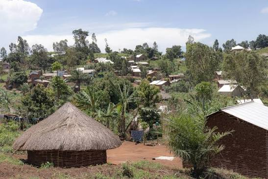
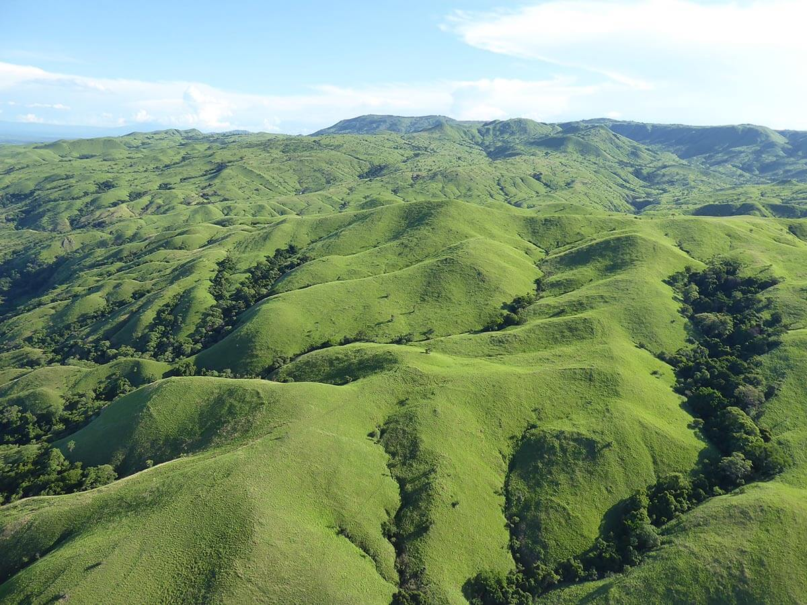
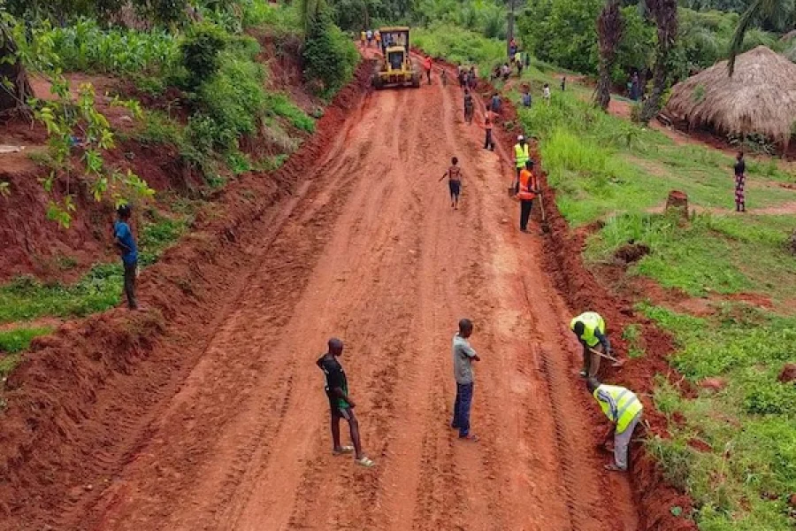
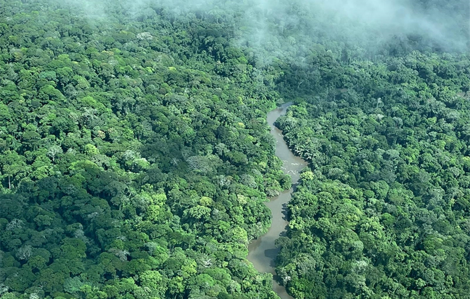
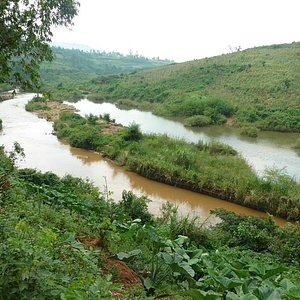
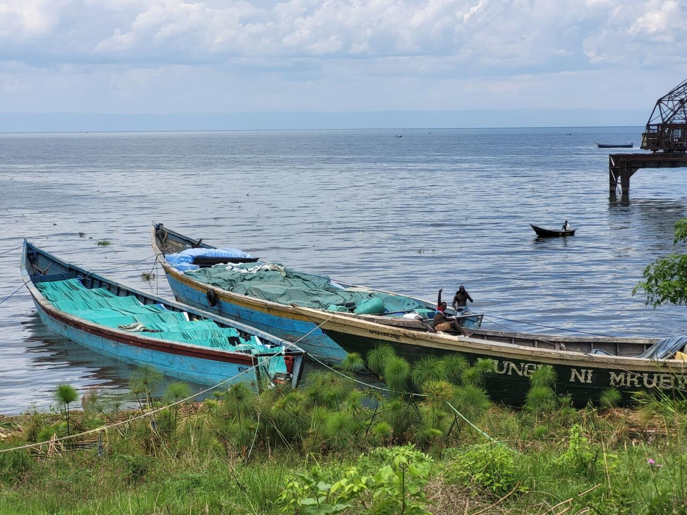
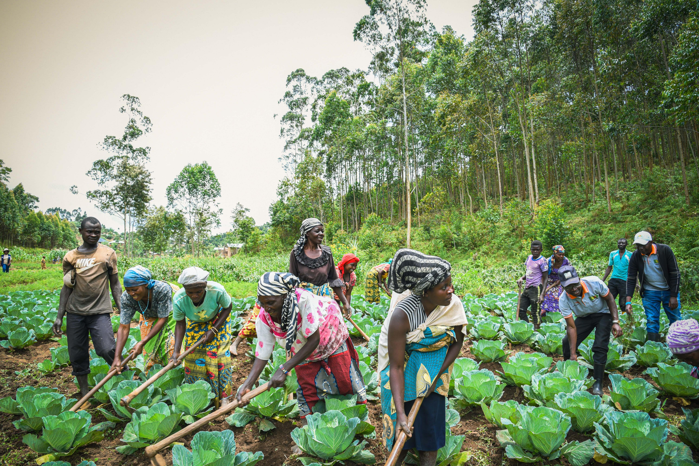

Geographical Location
Ituri Province is located in the northeastern part of the Democratic Republic of the Congo. Its provincial capital is Bunia. The province shares an international border with Uganda and is connected to neighbouring regions through trade, transport and social activities.

Location and Settlements
Communities and settlements across Ituri contribute to the province's social and economic activities.
Landscape and Relief
Ituri has a varied landscape made up of forests, hills, valleys, rivers and areas of open land. The landscape differs across the province, creating different conditions for settlement, farming, transport and other economic activities.

Hills and Landscape
Ituri has areas of hills, valleys and open land that form part of its varied natural landscape.

Natural Terrain and Roads
Roads and natural terrain connect communities and support transport and economic activities.
Climate and Weather
Ituri generally experiences a tropical climate. Rainfall and temperature vary across different locations and seasons. Rain supports agricultural activities and the growth of natural vegetation.
Forests and Natural Environment
The province is known for its rich natural environment, including the Ituri Forest. The forest supports different species of plants and animals and is important for biodiversity. Protecting forests and natural habitats is essential for environmental conservation.

Ituri Rainforest
The Ituri Forest is an important natural habitat that supports biodiversity and environmental conservation.
Rivers and Water Resources
Rivers and other water resources are important to communities across Ituri. They support domestic activities, agriculture and local livelihoods. Responsible management of these resources helps protect the environment and support development.

Rivers of Ituri
Rivers provide important water resources for communities, agriculture and local livelihoods.
Lake Albert
Lake Albert is located along the western side of Ituri Province, near the border with Uganda. It is an important water resource for nearby communities, supporting fishing, transport and other economic activities.

Lake Albert
Lake Albert is an important water body in the region and supports fishing and other community activities.

Natural Resources and Economic Activities
Ituri has natural resources that contribute to its economic potential. Agriculture, fishing, forestry and mineral-related activities are among the economic activities found in the province. Sustainable use of these resources is important for long-term development.
Back to About Ituri